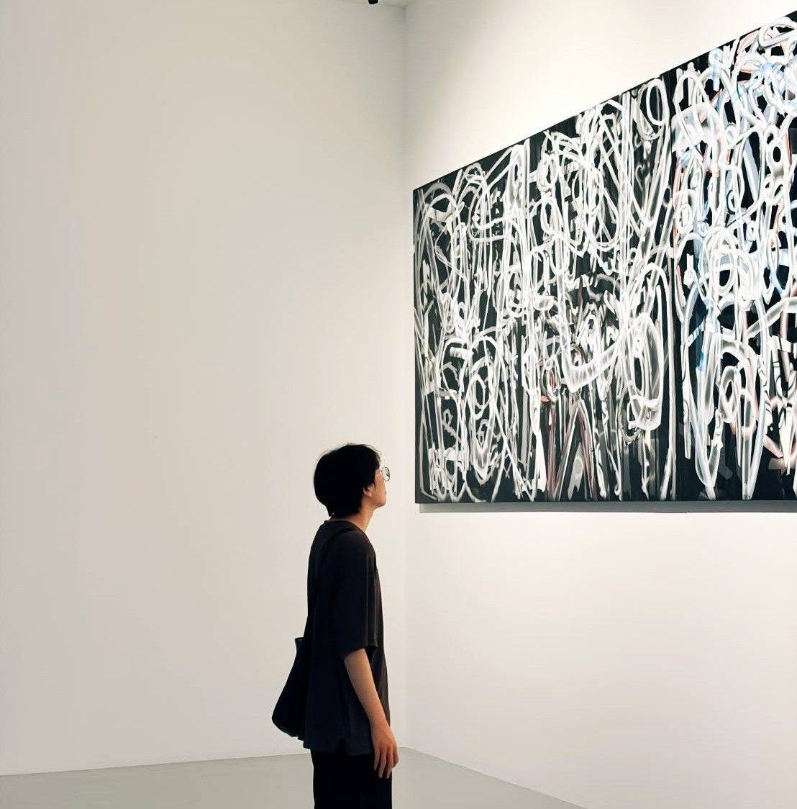
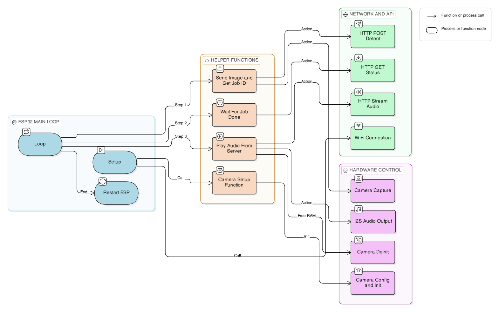
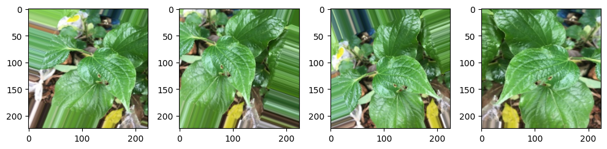
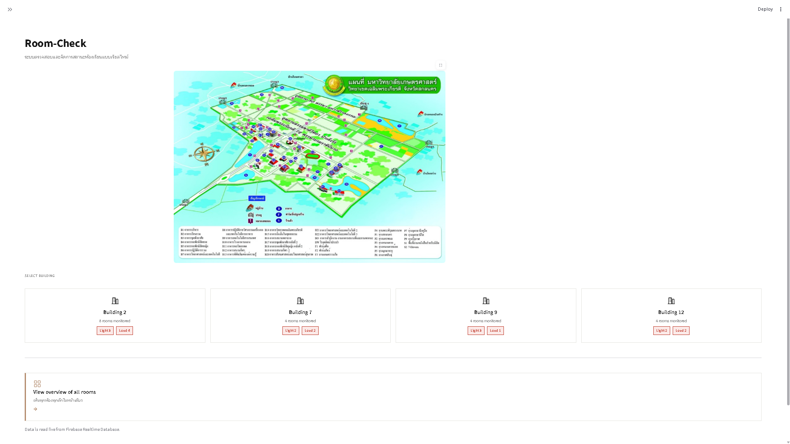
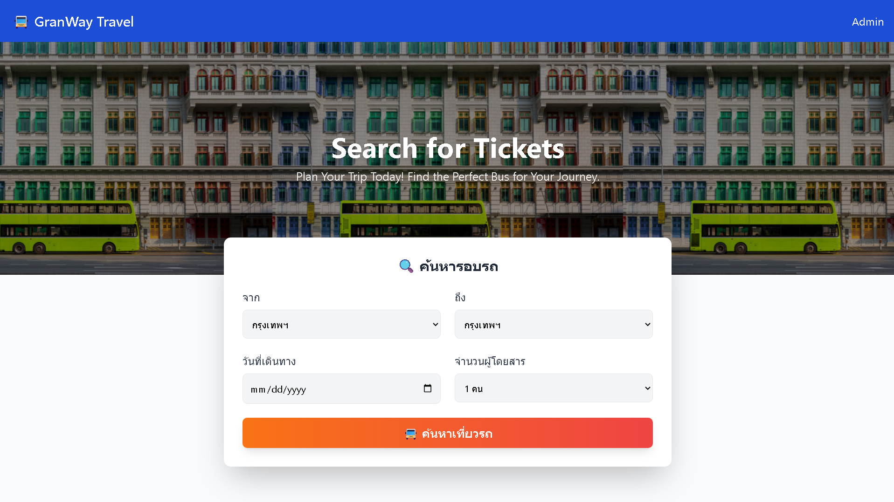

Open to internship
AI & Computer Engineer
Computer Engineering student who bridges the gap between hardware and software. Experienced in building firmware for embedded IoT devices, developing full-stack applications, and integrating AI & Computer Vision into physical systems.

Thikhathat Rattanatai
KU · 2026
01 — Work
Technical Projects
Five projects spanning computer vision, embedded IoT, and full-stack systems.
01

Seeing Eyes — AI for Blind Assistive Platform
FastAPI
YOLOv8n
Apple Depth Pro
Gemini API
gTTS + FFmpeg
C++ (ESP32-CAM)
- Built an assistive vision system for visually impaired users: an ESP32-CAM captures a frame, sends it as Base64 JSON to a FastAPI backend, and receives a Thai-language audio description in return.
- Designed a parallel inference pipeline — YOLOv8n object detection runs first, then Apple Depth Pro (metric depth) and Gemini (scene analysis) run concurrently via
ThreadPoolExecutorinstead of sequentially, cutting total processing time from ~6s to ~4s per frame. - Computed real-world distance per detected object using 3-point depth sampling, then composed natural Thai speech text (position + object + distance) and synthesized it with gTTS, re-encoded through FFmpeg to 16kHz mono MP3 for playback on constrained hardware.
- Implemented an async background job queue (job_id + polling via
/status) so the ESP32 can submit a frame and poll for completion without blocking, with per-stage timing breakdown (YOLO, depth, Gemini, TTS) exposed for debugging and tuning. - Structured the backend as a modular FastAPI package (
config,models,speech,processing,routes) with automatic 24-hour job cleanup and full Swagger documentation.
Note — This is my senior capstone project, currently pending academic publication and patent filing. To protect intellectual property, the source code is temporarily kept in a private repository. However, I am more than happy to discuss the architecture or provide a live code walkthrough during an interview. If you need more information, please feel free to contact me.
View on GitHub
02

Thai Herb Image Classification using CNN
Python
TensorFlow
Keras
Deep Learning
- Built a multi-class CNN to classify Thai herbs (e.g. กะเพรา, ขมิ้นชัน) from leaf images — the project's core goal was not raw accuracy but systematically diagnosing and solving overfitting on a small, visually similar (mostly green-leaf) dataset.
- Structured the network as repeated feature-extraction blocks:
Conv2D→BatchNormalization→ ReLU →MaxPooling2D→Dropout, followed by a classification head (Flatten→ Dense → Dropout → Dense/Softmax). - Applied on-the-fly Data Augmentation with
ImageDataGenerator— random rotation, zoom/shift, and horizontal flip — so the model sees varied viewpoints each epoch instead of memorizing fixed training images. - Added Batch Normalization after each convolution block to reduce internal covariate shift, stabilize training, and allow a higher learning rate; combined with Dropout (20–50%) in both conv and dense layers to force the network to rely on robust, generalizable features rather than any single neuron.
- Compared model behavior with and without each regularization technique to isolate and evaluate its individual contribution to reducing the train/validation accuracy gap.
03

AF Cineplex — Movie Ticket Booking Platform
React 19 + TypeScript
Vite
Tailwind CSS
Express + TypeScript
MariaDB
- Built a full-stack cinema booking platform as a monorepo — a React 19 + TypeScript + Vite client and an Express + TypeScript API server, each with its own dependency and build pipeline, communicating over a typed REST API.
- Designed an interactive real-time seat map (5 rows × 8 seats, 40 total) with three pricing tiers — VIP, Premium, Regular — showing live availability (open / selected / booked) and auto-calculating the running total as seats are selected.
- Enforced booking integrity at the database layer with a unique composite constraint on
(showtime_id, seat_id)in a normalized 4-table schema (movies, showtimes, seats, bookings, booking_details), guaranteeing no two customers can double-book the same seat. - Implemented an end-to-end payment flow — generate a payment QR code, accept a slip upload (JPG/PNG up to 5MB) via
multer, and return a unique booking confirmation with a summarizedadmin_bookings_viewfor staff review. - Took the six-step booking journey from movie → showtime → seat map → customer details → QR payment → confirmation, with typed API endpoints for movies, showtimes, seats, and bookings documented and health-checked via dedicated status routes.
04

Room-Check — Smart IoT Monitoring System
Python
Streamlit
Firebase RTDB
C++ (ESP32)
- Built an end-to-end IoT room-status system: ESP8266/ESP32 sensor nodes read ambient light (LDR) and sound level, then push readings to Firebase Realtime Database, which a Streamlit web app polls to show live room-by-room status grouped by building.
- Designed the analog wiring per board — LDR + sound sensor on separate analog pins (34/35) on ESP32, while ESP8266's single analog pin (A0) is reserved for the LDR and the sound sensor instead runs in digital threshold mode (D1/GPIO5).
- Replaced an inefficient blocking
while Truepolling generator with a single fetch per page refresh, and migrated deprecated Streamlit calls tost.rerun(), noticeably improving dashboard responsiveness. - Visualized live sound levels with Plotly gauge charts wired directly to the real
sound_valuefield from Firebase, replacing an earlier placeholder that used randomly generated numbers. - Added a LINE Messaging API bot that notifies instantly when a light is turned on, with session-state throttling to stop the bot from spamming repeated alerts during rapid state changes.
05

GranWay Travel — Bus Ticket Booking System
PHP
MySQL / MariaDB
Tailwind CSS
Bootstrap
PHPMailer
- Built a complete bus ticket booking site in PHP + MySQL covering route search by origin/destination/date, an interactive seat map across Standard and VIP buses, QR payment with slip upload, and automatic booking confirmation.
- Modeled the schedule system around normalized
bus_scheduleandbus_stopstables supporting four routes (Bangkok–Chiang Mai, Bangkok–Phuket, and their return legs) with per-stop ordering and mixed Standard/VIP pricing. - Used a MySQL
BEFORE INSERTtrigger to auto-generate human-readable booking IDs (BOOK-XXXXXX) at the database layer instead of application code, keeping ID generation atomic with the insert. - Integrated PHPMailer over Gmail SMTP to send a fully-detailed confirmation email (trip code, departure time, route, seat numbers) immediately after a booking is saved.
- Built a session-authenticated admin dashboard to review, search, approve, or delete bookings, plus a dedicated ticket view showing class, route, seat numbers, and the uploaded payment slip.
02 — Recognition
Awards & Achievements
Select national-level competitions and university challenges. Click a row for details.